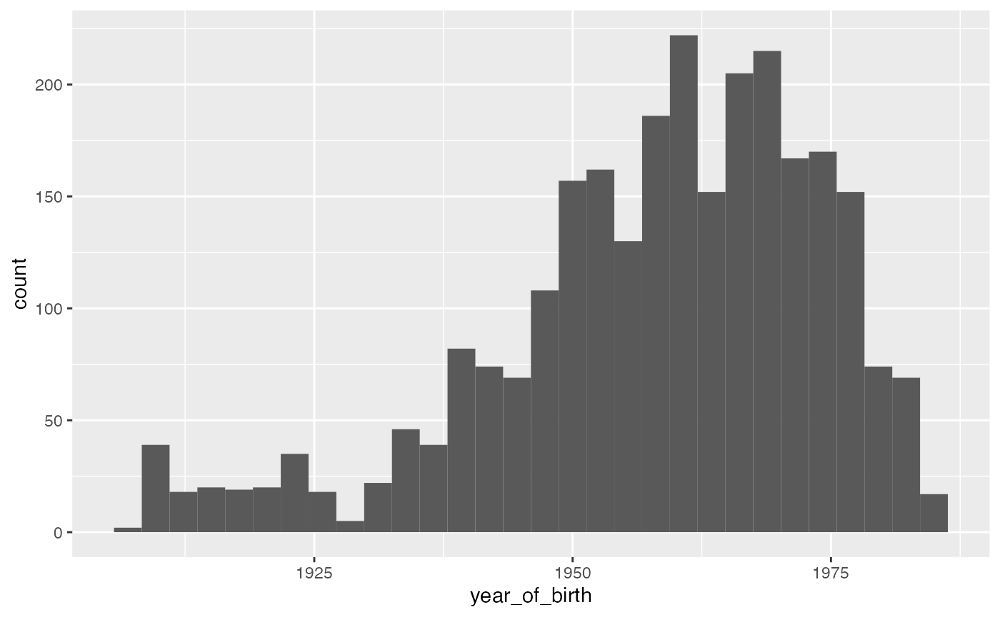
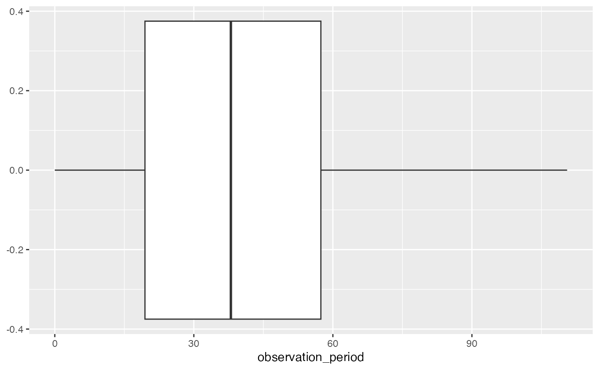

Set up
First let’s load the required packages for the code in this vignette. If you haven’t already installed them, all the other packages can be installed using ´install.packages()´
Creating the cdm reference
Now let´s connect to a duckdb database with the Eunomia data (https://github.com/OHDSI/Eunomia).
con <- DBI::dbConnect(duckdb::duckdb(), dbdir = eunomia_dir())
cdm <- cdm_from_con(con, cdm_name = "eunomia", cdm_schema = "main", write_schema = "main")
cdm
#>
#> ── # OMOP CDM reference (duckdb) of eunomia ────────────────────────────────────
#> • omop tables: person, observation_period, visit_occurrence, visit_detail,
#> condition_occurrence, drug_exposure, procedure_occurrence, device_exposure,
#> measurement, observation, death, note, note_nlp, specimen, fact_relationship,
#> location, care_site, provider, payer_plan_period, cost, drug_era, dose_era,
#> condition_era, metadata, cdm_source, concept, vocabulary, domain,
#> concept_class, concept_relationship, relationship, concept_synonym,
#> concept_ancestor, source_to_concept_map, drug_strength
#> • cohort tables: -
#> • achilles tables: -
#> • other tables: -This cdm object is now what we´ll use going forward. It provides a reference to the OMOP CDM tables. We can see that these tables are still in the database, but now we have a reference to each of the ones we might want to use in our analysis. For example, the person table can be referenced like so
Putting it all together
Say we want to make a histogram of year of birth in the person table. We can select that variable, bring it into memory, and then use ggplot to make the histogram.
cdm$person %>%
select(year_of_birth) %>%
collect() %>%
ggplot(aes(x = year_of_birth)) +
geom_histogram(bins = 30)
If we wanted to make a boxplot for length of observation periods we could do the computation on the database side, bring in the new variable into memory, and use ggplot to produce the boxplot
cdm$observation_period %>%
select(observation_period_start_date, observation_period_end_date) %>%
mutate(observation_period = (observation_period_end_date - observation_period_start_date)/365, 25) %>%
select(observation_period) %>%
collect() %>%
ggplot(aes(x = observation_period)) +
geom_boxplot()
Behind the scenes
We use show_query to check the sql that is being run against duckdb
cdm$person %>%
tally() %>%
show_query()
#> <SQL>
#> SELECT COUNT(*) AS n
#> FROM main.person
cdm$person %>%
summarise(median(year_of_birth))%>%
show_query()
#> Warning: Missing values are always removed in SQL aggregation functions.
#> Use `na.rm = TRUE` to silence this warning
#> This warning is displayed once every 8 hours.
#> <SQL>
#> SELECT PERCENTILE_CONT(0.5) WITHIN GROUP (ORDER BY year_of_birth) AS "median(year_of_birth)"
#> FROM main.person
cdm$person %>%
mutate(gender = case_when(
gender_concept_id == "8507" ~ "Male",
gender_concept_id == "8532" ~ "Female",
TRUE ~ NA_character_))%>%
show_query()
#> <SQL>
#> SELECT
#> person.*,
#> CASE
#> WHEN (gender_concept_id = '8507') THEN 'Male'
#> WHEN (gender_concept_id = '8532') THEN 'Female'
#> ELSE NULL
#> END AS gender
#> FROM main.person
DBI::dbDisconnect(con, shutdown = TRUE)